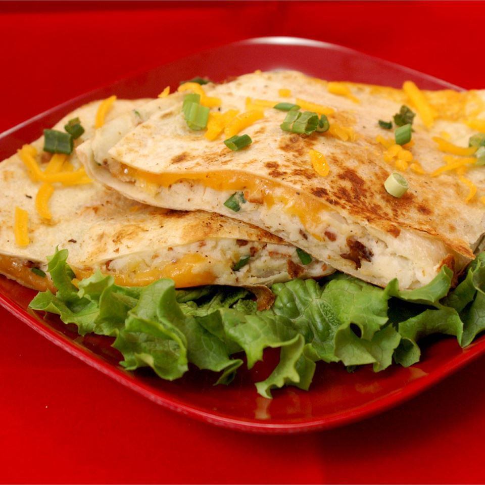

Mashed Potatoe Quesadilla

Description
Great recipe for those who enjoy Mexican food.
This recipe can also be easily customizable where you can add
remove as you like.
Ingredients
- 2 cups mashed potatoes
- 6 slices cooked bacon, crumbled
- ¼ cup sliced green onions
- 8 flour tortillas
- 2 cups shredded Cheddar cheese
- 2 tablespoons softened butter
- 1 cup salsa
- ¼ cup sour cream
Steps
- Stir together mashed potatoes, bacon, and green onions. Spread mashed potato mixture onto 4 tortillas, spreading to within 1/2 inch of the edges. Sprinkle shredded Cheddar cheese on top of mashed potatoes and top with remaining tortillas. Lightly butter each side of quesadilla.
- Preheat a large skillet over medium heat.
- Place a quesadilla into the preheated pan; cook until golden brown and crispy, 2 to 3 minutes per side. Repeat with remaining quesadillas. Serve with salsa and sour cream.